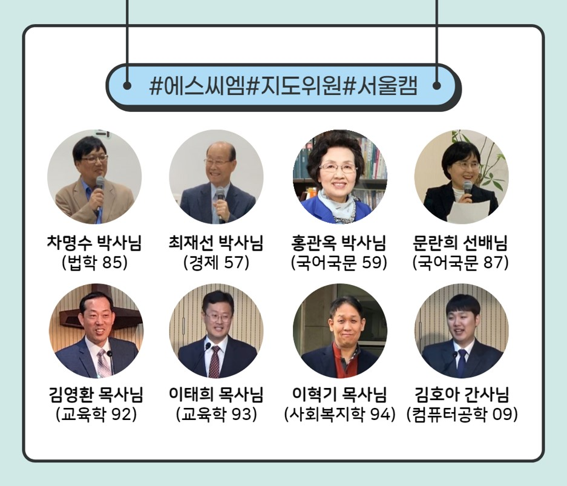
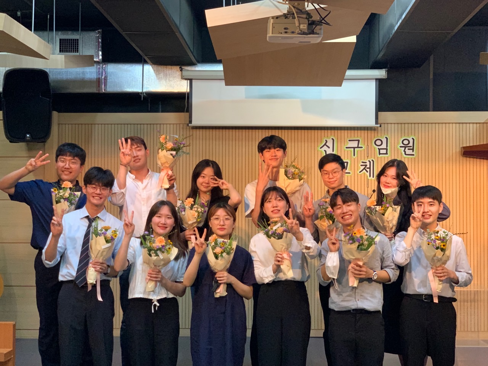
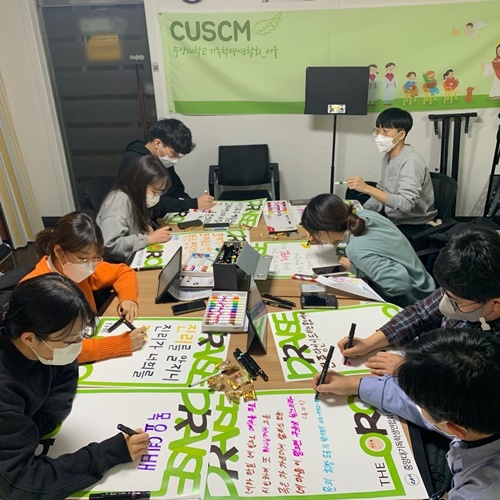
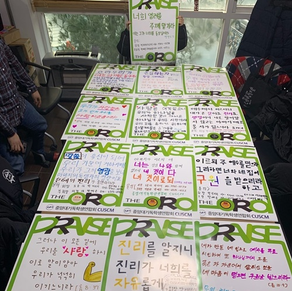
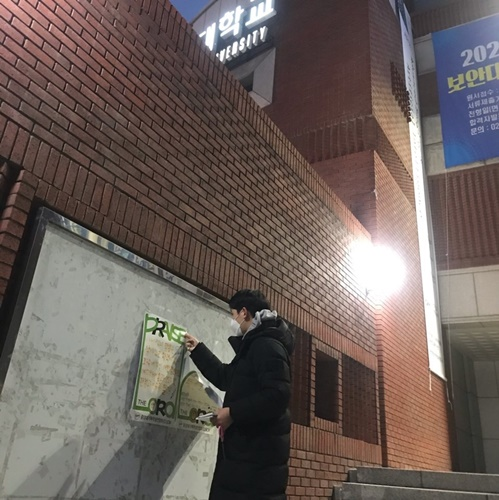

중앙대학교 기독학생연합회(CUSCM)
중앙대학교 기독학생연합회는 중앙대학교 최초의 동아리로서, 1948년 9월 학생들과 교직원들에 의해 창립된 자생적 학원 선교단체입니다.
중앙대학교 기독학생연합회는 어떠한 선교단체나 교회의 지원, 영적 도움 없이 창립되어 지난 70여 년 동안 "그리스도에게로 돌아가자, 말씀으로 돌아가자, 성령으로 돌아가자" 라는 슬로건을 내걸고 "너희는 온 천하에 다니며 복음을 전하라" 는 예수 그리스도의 지상명령에 순종하여 예배, 찬양, 기도, 성경공부, 복음전도, 그리고 섬김과 사랑을 해 학원복음화에 힘써왔습니다.
지난 70년간 성령께서 오순절적 성령의 역사들을 일으키셔서 날마다 믿는 자를 더하셨고, 치유와 회복의 역사를 더하셨습니다. 이러한 성령님의 역사가 자생적인 기독학생연합회를 통하여 이루어졌다는 사실은 세계적으로 그 유례를 찾아볼 수 없을 것입니다.
- 중앙대학교 기독학생연합회 70년사 中 -
지도위원 소개
중앙대 기독학생연합회는 역사가 긴 만큼, SCM에서 직접 활동하셨던 중앙대 동문 선배님들께서 현재 지도위원으로 계십니다. 지도해주시는 목사님들은 정규 신학대학원을 졸업하시고 건전한 교단(교회)에서 목회하고 계시며, 이단 및 사이비와 무관합니다.

회장단 소개
회장단은 "회장, 양육담당 부회장, 선교담당 부회장, 관리담당 부회장, 회계, 서기" 등 6명으로 구성되며, 매년 재학생 중에서 선출하고 있습니다.
 [서울캠퍼스 72대 & 73대 회장단]
찬양 번역
중앙대 기독학생연합회에서는 크리스천들에게 친숙한 "내 평생 사는 동안", "생명 주께 있네", "항상 진실케" 등의 찬양을 번역한 역사를 가지고 있습니다.
내 평생 사는 동안 - 2020년 동문초청 성가의 밤 특송
CUSCM의 주요 연혁
- 중앙대학교 기독학생연합회는 1948년부터 현재에 이르기까지 회장단을 선출하여 캠퍼스 복음화에 매진하고 있음
- 1980. 04.
- 1979년 3월 안성캠퍼스가 개설되자 중앙대학교 기독학생연합회에서는 1980년 4월 안성캠퍼스 기독학생연합회를 창설하여 박원철 (지개 79) 선배를 1대 회장으로 선출함
- 1976. 05.
- 중앙대학교 기독학생연합회는 자체 영문 표기인 'Chungang University Student Christian Movement' (CUSCM) 의 'Movement'가 '운동'이라는 점을 감안하여 이를 '선교'를 의미하는 'Mission'으로 교체하여 'Chungang University Student Christian Mission'으로 사용하기로 결정하고 이 영문 이니셜을 오늘까지 사용하고 있음
- 1953.
- 휴전협정과 더불어 중앙대학교가 서울 흑석동 캠퍼스로 복귀하여 기독학생 활동도 활발히 전개됨
- 1951. 04.
- 부산 교사에서 주선영 (교육 51) 선배에 의하여 기독학생회가 재창립되어 오늘에 이름
- 1951. 01.
- 1. 4 후퇴로 인하여 중앙대학교 캠퍼스가 부산 송도 해수욕장 임시교사로 이전하여 개교하게 되자 기독학생연합회도 그곳으로 이전했으나 활동은 거의 지지부진한 상태에 있었음
- 1950. 06.
- 한국 전쟁이 발발하자 중앙대학교가 좌익세력에 의하여 접수되어 운영되자 기독학생 활동은 강제적으로 중단됨
- 1950. 03.
- 중앙대학교가 종합대학으로 개편됨에 따라 중앙대학교 기독학생연합회는 연합회체제로 개편하고 그 명칭을 '중앙대학교 기독학생연합회'라 개칭함
- 1948. 12.
- 초대 회장 잔임 기간을 김윤식 (정치 48) 선배가 회장으로서 섬김과 동시에 2대 회장까지 역임
- 1948. 12.
- 초대회장 김용환 선배는 혼란기에 학원 내 좌익 세력과 투쟁하던 중 좌익세력의 강압에 의해 회장직을 사퇴함
- 1948. 12.
- 이여진 교목에 의하여 중앙대학교 기독학생회의 영문 명칭이 SCM (Student Christian Movement)이라고 명명됨
- 1948. 09.
- 중앙대학교 기독학생회 창립과 동시에 교육학과 이여진 교수를 교목으로 추대, 이에 따라 대학 당국에서는 이여진 목사를 초대 교목으로 임명하고 교목실 설치
- 1948. 09.
- 중앙대학교 기독학생회 창립. 초대회장에 김용환 (법 48) 선배 당선
포스터 선교
중앙대학교 캠퍼스를 다니다보면 한번쯤은 꼭 발견할 수 있는 목요예배 포스터! CUSCM의 형제자매들이 창의적인 아이디어를 굴려서 매주 새롭게 그리고 있답니다 :)
- 
- 

- 
영상 콘텐츠 제작
같은 중앙대학교의 학생으로서, 복음을 접해보지 못한 학생들에게 예수님과 함께하는 삶의 모습을 보여줄 수 있도록 재학생이나 졸업하신 선배님들의 인터뷰 및 간증 영상을 제작하고 있습니다.
카드뉴스 제작
유튜브 뿐 아니라 에브리타임이나 인스타그램과 같은 대학생들이 자주 이용하는 커뮤니티에서도 복음이 전해질 수 있도록 다양한 형식의 시도를 하고 있습니다.
전도 여행
방학 중에는 캠퍼스를 떠나 땅 끝까지 복음을 전하기 위헤, 우리나라의 소외된 지역에 있는 교회를 돕고 마을 복음전도, 노방찬양, 청소년 사역, 농촌 일손돕기, 무언극 등의 활동을 하며, 낮은 곳에서 하나님이 보여주시는 놀라운 은혜와 역사를 직접 체험했습니다. (코로나19 기간 동안 중단되었습니다.)
찬양 전도
매주 목요일 아침마다 형제자매들이 함께 캠퍼스 정문에서 찬양을 부르고, 일찍부터 통학하는 학생들을 위해 곰젤리(^o^)도 나눠주었으나... (코로나19 기간 동안 중단되었습니다.)
강의실 전도
개강 첫 주마다, 교수님께 허락을 받은 1학년 수업의 시작 전에 선포자를 세워 짧은 개인 간증 위주로 선포메시지를 전하고 캠퍼스와 학생들을 위해 기도하는 시간을 갖고 있습니다. (코로나19 기간 동안 중단되었습니다.)